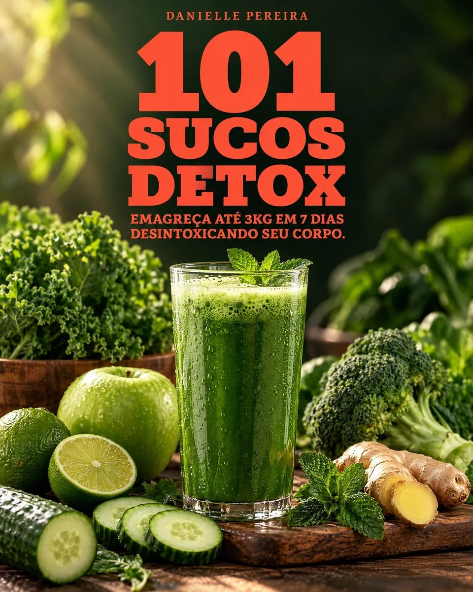

folhas
+ frutas
+ frutas
Combinações verdes para começar.
Um ritual simples para a sua rotina
Um e-book para quem quer colocar mais ingredientes naturais no dia a dia, sem complicar a cozinha.

O 101 Sucos Detox reúne ideias para você sair do automático e experimentar combinações com frutas, folhas, legumes, sementes e ingredientes frescos.
É um material de consulta rápida, feito para acompanhar a vida real. Você escolhe uma receita, separa os ingredientes e começa.
Quero ter acesso ao materialA proposta do material é organizar uma jornada de 10 dias para você explorar os sucos naturais e encaixar esse hábito no seu ritmo.
Tenha opções diferentes para cada momento da rotina.
Ingredientes conhecidos e combinações fáceis de testar.
Use o roteiro de 10 dias como guia e adapte à sua realidade.
Uma coleção para consultar no café da manhã, no lanche ou sempre que bater vontade de variar.
Combinações verdes para começar.
Receitas leves para variar o paladar.
Um roteiro simples para acompanhar.
O guia digital com 101 receitas e uma proposta de 10 dias para trazer mais variedade e praticidade à sua rotina.
Pagamento processado com segurança pela Kiwify. O acesso é liberado após a confirmação da compra.
Você recebe um PDF digital com 101 receitas de sucos e uma proposta de programa de 10 dias para organizar sua experiência.
Sim. O PDF pode ser consultado no celular, tablet ou computador, de acordo com o leitor de arquivos do seu dispositivo.
Não. O material é informativo e não substitui orientação de nutricionista, médico ou outro profissional habilitado. Resultados variam de pessoa para pessoa.
O acesso é liberado conforme as condições e os procedimentos do checkout da Kiwify.